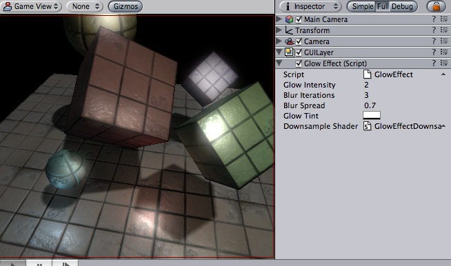

Previous
Previous
Glow (sometimes called Bloom) can dramatically enhance the rendered image by making overbright parts "glow" (e.g. sun, light sources, strong highlights).
Unity includes a Glow image postprocessing effect, and all builtin shaders are made to support it nicely. As with all image effects, Glow is available in Unity Pro only. Make sure to have the Pro Standard Assets installed.
|  |
Glow effect applied to the scene
Details
Glow uses the alpha channel of the final image to represent "color brightness". All colors are treated as RGB, multiplied by the alpha channel. You can view the contents of the alpha channel in SceneView.
All builtin shaders write the following information to alpha:
- Main texture's alpha multiplied by main color's alpha (not affected by lighting).
- Specular and Glossy shaders add specular highlight multiplied by specular color's alpha.
- Alpha (translucent) shaders do not modify alpha channel at all.
- Particle shaders do not modify alpha channel, except for Particles/Multiply which darkens anything that is in alpha.
Most of the time you'll want to do this to get reasonable glow:
- Set material's main color alpha to zero or use a texture with zero alpha channel. In the latter case, you can put non-zero alpha in the texture to cause these parts to glow.
- Set the specular color alpha for Specular/Glossy shaders to be 100%.
- Keep in mind what alpha the camera clears to (if it clears to a solid color), or what alpha the skybox material uses.
- Add the Glow image effect to the camera. Tweak Glow Intensity and Blur Iterations values, you can also take a look at the comments in the shader script source.
Tips:
- Use the alpha rendering mode in the scene view toolbar to quickly see which objects output different values to the alpha channel.
- You need to attach the image effect to the camera while edit mode. To see the effect you have to go into playmode afterwards.
Glow works on graphics cards with support for pixel shaders. Eg. GeForce FX 5200 or Radeon 8500 and up. All image effects automatically disable themselves when they can not run on an end-users graphics card.